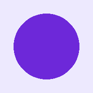

주간 개발 수다 · 142화
타입스크립트 6 정리와 사이드 프로젝트 회고
2026년 11월 17일 · 58분이번 화에서는 타입스크립트 6에서 달라진 점을 살펴보고, 세 사람이 각자 주말마다 만든 사이드 프로젝트를 돌아봅니다. 배포하면서 겪은 실수와 다음에 바꿀 점도 이야기합니다.
챕터
00:00오프닝과 근황
06:40타입스크립트 6에서 바뀐 것
24:15사이드 프로젝트 회고: 가계부 앱
41:30배포 실수 모음과 청취자 질문